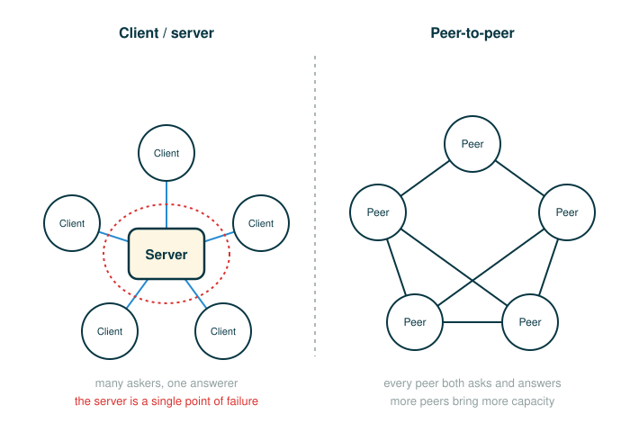

4.6.3 Peer-to-Peer Systems
The previous lesson built a system with two fixed roles: a client that asks, and a server that answers. That shape is excellent when the whole point is to hand out one service from one place. But it has a built-in pressure point, and this lesson is about the design that pushes back against it.
By the end you will be able to do five things: say exactly why a single central server becomes a problem as a system grows, describe how a peer-to-peer system divides the same work across all of its participants, explain why such a system still needs an organized network structure rather than chaos, read a message-forwarding hop the same careful token-by-token way you read a line of Python, and explain why almost every real peer-to-peer system (Skype included) is a hybrid rather than a pure one.
There is very little new syntax here. The new skill is reading a system the way you already read code: slow down, name each part, and ask what each part is responsible for.
Why One Central Server Is Not Always Enough
Start from the system you already know. In client/server architecture, one component holds the service and every other component lines up to ask for it. The source names two costs of that arrangement, and they are the reason this lesson exists.
The first cost is a single point of failure: the server is the only component with the ability to dispense the service, so if it stops working, every client loses access at once. The clients themselves are interchangeable and can come and go as necessary, but the server cannot.
The second cost is scarcity under load: computing resources become scarce if there are too many clients. The deeper problem is the direction of the relationship. As the source puts it, clients increase the demand on the system without contributing any computing resources. Every new client is another mouth to feed and brings no food.
Hold onto that last sentence, because it is the hinge of the whole lesson. The client/server model is appropriate for service-oriented situations. But there are other computational goals for which a more equal division of labor is a better choice.
An Intuitive Picture: The Lecture Hall and the Study Group
Picture two ways a hundred students can learn the same material.
In a lecture hall, one instructor answers everyone. Every question routes to the front of the room. The instructor is powerful and knowledgeable, but there is exactly one of them. If two hundred students show up instead of one hundred, the instructor is not twice as fast. The line of raised hands just gets longer, and if the instructor is out sick, the room learns nothing. That is the client/server shape: many askers, one answerer, and all the pressure on a single point.
Now picture a study group. Each student can ask for help, and each student can also give help. Someone who understood last week's topic explains it; someone else returns the favor on this week's. A participant is not only a consumer of answers. A participant also contributes answers, notes, and time. Crucially, when more students join the study group, more help arrives along with the extra demand, because every newcomer is also a new helper.
That second picture is a peer-to-peer system. The defining move is that the participants stop being purely clients. Each one acts partly like a client (sometimes it asks) and partly like a server (sometimes it answers).

What Peer-to-Peer Means
The term peer-to-peer is used to describe distributed systems in which labor is divided among all the components of the system. All the computers send and receive data, and they all contribute some processing power and memory. In a peer-to-peer system, all components of the system contribute some processing power and memory to a distributed computation.
This is what fixes the scarcity problem from the lecture hall. Because every participant brings resources, the system gets the property the client/server model lacked: as a distributed system increases in size, its capacity of computational resources increases. Growth adds supply, not just demand.
So the work of the system can be spread out instead of concentrated. Concretely, the responsibilities a peer can take on include:
- Storing a piece of the data.
- Forwarding a message toward its destination.
- Contributing processing power, memory, or bandwidth (how much data a connection can carry per second).
- Asking for data now and providing data to others later.
Because no single component holds everything, one failed participant does not necessarily stop the whole system, which directly answers the single-point-of-failure cost from before.
Network Structure: Organized, Not Chaotic
It is tempting to imagine peer-to-peer as a free-for-all where everyone shouts to everyone. It is not. The single most common misunderstanding of these systems is that "no central server" means "no organization." The opposite is true: with no one in charge, the participants have to organize themselves.
The source is explicit about this. Division of labor among all participants is the identifying characteristic of a peer-to-peer system. This means that peers need to be able to communicate with each other reliably. In order to make sure that messages reach their intended destinations, peer-to-peer systems need to have an organized network structure. The components in these systems cooperate to maintain enough information about the locations of other components to send messages to intended destinations.
The practical reason this matters is that peers constantly join and leave. If every peer had to know every other peer, that bookkeeping would be impossible to keep current as the membership changed. So instead, a peer typically knows only a small set of neighbors, and trusts that messages can be relayed neighbor to neighbor toward wherever they need to go.
Here is a tiny neighbor map. Each peer knows only a few others, not the whole network.
Ada knows: Ben, Cora
Ben knows: Ada, Dev
Cora knows: Ada, Eli
Dev knows: Ben
Eli knows: CoraThis is the same idea the source describes for Skype: each computer knows the location of a few other computers in its neighborhood. The machine model is not "broadcast to everyone." It is "hand the message to a neighbor, who hands it to one of their neighbors, and so on, until it arrives."
Following a Message Hop
A single forwarding step is small enough to read the way you read a line of code. Suppose Ada wants to reach Eli, but Ada does not know Eli directly. Walk the hop one part at a time. The final row is the action the step performs.
Ada -> Cora -> Eli
├─ Ada ......... the sender; knows only Ben and Cora, not Eli
├─ -> .......... "forward to a neighbor"
├─ Cora ........ a neighbor of Ada that does know Eli
├─ -> .......... forward again, now one hop closer
├─ Eli ......... the intended destination, reached via Cora
└─ result ...... the message arrives without Ada ever knowing Eli directlyNotice what each part is responsible for. Ada is not required to know the whole network; Ada only needs one neighbor who is closer to the goal. The arrows are the relaying. The destination is reached by composition of small steps, exactly the way a program reaches a result by composing small operations. No participant has the global picture, and yet the message gets there.
Scaffolding and Supernodes: Why Pure Is Rare
Pure peer-to-peer turns out to be hard to run. Newcomers have to discover the network somehow. Someone has to keep track of where everyone currently is as peers come and go. Doing all of that with no special help is possible but fragile, so many real systems add a little structure on top.
The source describes this directly. In some peer-to-peer systems, the job of maintaining the health of the network is taken on by a set of specialized components. Such systems are not pure peer-to-peer systems, because they have different types of components that serve different functions.
The source offers a precise word picture for those specialized components: the components that support a peer-to-peer network act like scaffolding. They help the network stay connected, they maintain information about the locations of different computers, and they help newcomers take their place within their neighborhood.
The word "scaffolding" is doing real work, so take it literally. When a building is constructed, scaffolding stands beside it to hold things in place and let workers reach the right spots. The scaffolding is not the building, and it is not where people will eventually live. In the same way, these helper components are not where the main work happens. The bulk data transfer still flows peer to peer; the scaffolding just keeps the structure healthy so that transfer can happen.
This is the key conceptual point of the lesson: real distributed systems are usually hybrids. "Peer-to-peer" describes how the labor is divided, not a promise that there is zero central help anywhere. A system can be deeply peer-to-peer in its data flow and still lean on a few coordinating components for discovery and bookkeeping.
What Peers Actually Do: Transfer and Storage
The source names the two most common applications of peer-to-peer systems: data transfer and data storage. They are worth separating, because they stress the system in different ways.
Data Transfer
For data transfer, each computer in the system contributes to send data over the network. If the destination computer is in a particular computer's neighborhood, that computer helps send data along. This is the same relaying you traced in the hop above, now viewed as moving a file rather than a single message.
The payoff is bandwidth. In the lecture-hall model, every byte of a file would have to leave the one server, so the server's network connection is the bottleneck. In the study-group model, the work of sending is shared across the many computers that help pass the data along. The cost of sending is spread across the group instead of falling on one machine.
Data Storage and Failure
For data storage, the source gives two distinct reasons to spread data out: the data set may be too large to fit on any single computer, or too valuable to store on just a single computer. The first reason is about capacity; the second is about safety.
The mechanism for both is the same. Each computer stores a small portion of the data, and there may be multiple copies of the same data spread over different computers.
record X is stored on Peer A, Peer C, and Peer FKeeping multiple copies on purpose is what makes the system survive the loss of a peer. The source states the recovery story plainly: when a computer fails, the data that was on it can be restored from other copies and put back when a replacement arrives. So if Peer A leaves, record X is still available from Peer C and Peer F, and the system can write a fresh copy onto a new peer later.
The everyday version of this is keeping copies of important notes in several classmates' backpacks. If one backpack goes missing, the group has not lost the notes, and someone can photocopy a spare for the next person who joins.
The Official Example: Skype
The source uses one real system to tie all of this together. Read the description in full, because it shows every idea from this lesson working at once, and it shows the hybrid reality.
Skype, the voice- and video-chat service, is an example of a data transfer application with a peer-to-peer architecture. When two people on different computers are having a Skype conversation, their communications are transmitted through a peer-to-peer network. This network is composed of other computers running the Skype application. Each computer knows the location of a few other computers in its neighborhood. A computer helps send a packet to its destination by passing it on a neighbor, which passes it on to some other neighbor, and so on, until the packet reaches its intended destination.
Then comes the part that proves the hybrid point. Skype is not a pure peer-to-peer system. A scaffolding network of supernodes is responsible for logging-in and logging-out users, maintaining information about the locations of their computers, and modifying the network structure when users enter and exit.
Line that description up against the lesson. The two people in a call are peers whose voice and video data move peer to peer. Each computer knowing only a few neighbors is the organized network structure. Passing a packet neighbor to neighbor until it arrives is exactly the forwarding hop you traced. And the supernodes are the scaffolding: they handle login, logout, location tracking, and structural changes — the discovery and bookkeeping jobs — while the conversation itself flows among ordinary peers. Skype is peer-to-peer in its data flow and centralized in its coordination, which is precisely why the source calls it not pure.
The Tradeoffs
Peer-to-peer is a set of tradeoffs, not a free upgrade. It is worth seeing the gains and the costs side by side, because the right architecture depends on which column matters more for a given goal.
| What you can gain | What you now have to manage |
|---|---|
| Scalability: more peers bring more bandwidth, storage, and computation | Discovery: how does a brand-new peer find any others? |
| Fault tolerance: the system can keep working when one participant fails | Routing: how does a message find its way to the right destination? |
| Resource sharing: participants contribute as well as consume | Membership: how does the system stay healthy as peers constantly join and leave? |
| No single point of failure to take the whole system down | Maintenance: how does the network keep current information about where everyone is? |
| Capacity grows with size instead of saturating | Coordination: who, if anyone, helps newcomers take their place in the network? |
The left column is why anyone chooses peer-to-peer. The right column is the bill. Distributed computing is not "use more computers." It is the engineering of how computers coordinate, and choosing client/server, peer-to-peer, or a hybrid is choosing which problems you would rather solve.
A Step-by-Step Trace of Message Forwarding
To make the routing model fully concrete, walk a single message through the neighbor map from earlier. Ada wants to reach Eli. Recall the neighborhoods:
Ada knows: Ben, Cora
Ben knows: Ada, Dev
Cora knows: Ada, Eli
Dev knows: Ben
Eli knows: CoraTrace the forwarding, one decision at a time:
step 1 Ada wants to reach Eli. Ada checks its neighbors: Ben, Cora.
step 2 Eli is not a direct neighbor of Ada, so Ada cannot deliver directly.
step 3 Ada forwards the message to a neighbor. Say Ada forwards to Cora.
step 4 Cora checks its neighbors: Ada, Eli. Eli is a direct neighbor of Cora.
step 5 Cora delivers the message to Eli. Done.The message reached Eli even though Ada never knew Eli. That is the whole promise of the neighbor structure: global delivery out of purely local knowledge. The Python checkpoint below turns this same trace into runnable code so you can watch the relaying happen.
▶Step-Through Checkpoint
This is a toy model of neighbor forwarding. It is not a real peer-to-peer network and sends no real packets, but it makes the routing idea from this lesson concrete and runnable. The network is a dictionary that maps each peer to the small list of neighbors it knows. Stepping through it draws the environment diagram the forwarding really builds: the network dict sits on the heap, each recursive can_reach call opens its own frame for one start peer, and the single visited list is shared by reference across all those frames, so every peer appended in one hop is already visible to the next. Before you step through the block below, write down three predictions: which of Ada's two neighbors the search tries first and whether that branch dead-ends, what visited holds at the moment the search finally reaches Eli, and what the second print line shows when the search starts from Dev instead.
# (1)
network = {
"Ada": ["Ben", "Cora"],
"Ben": ["Ada", "Dev"],
"Cora": ["Ada", "Eli"],
"Dev": ["Ben"],
"Eli": ["Cora"],
}
def can_reach(start, target, visited):
if start == target:
return True
visited.append(start)
for neighbor in network[start]:
if neighbor not in visited:
if can_reach(neighbor, target, visited):
return True
return False
print(can_reach("Ada", "Eli", []))
print(can_reach("Dev", "Eli", []))
The construct to read carefully is the recursive line that does the forwarding. Walk its tokens, with the final row as the action:
if can_reach(neighbor, target, visited):
├─ if ............... only continue the search down this path if it succeeds
├─ can_reach ....... ask a neighbor to try reaching the target
├─ ( ............... begins the inputs to the recursive call
├─ neighbor ........ the neighbor we are forwarding the search to
├─ , ............... separates the inputs
├─ target .......... the destination we are still trying to reach
├─ , ............... separates the inputs
├─ visited ......... the peers already tried, passed along to avoid loops
├─ ) ............... ends the inputs
└─ action .......... forward the search one hop; return True if it reaches targetThe visited list is the part worth dwelling on. Ada knows Cora, and Cora knows Ada, so without a record of where the search has already been, the program could bounce Ada to Cora to Ada to Cora forever. Appending each peer to visited and skipping any neighbor already in it is what guarantees the search ends in this toy model.
Step through the block one line at a time and check each prediction as the frames open. The first call tries Ben before Cora, because Ben comes first in Ada's neighbor list; that branch dead-ends at Dev, whose only neighbor is already in visited, and returns False. Only then does the search hand off to Cora, which knows Eli directly, so at the moment of success visited holds Ada, Ben, Dev, and Cora — Eli is never appended, because the call that receives Eli returns True before the append runs. The second call also prints True, with Dev relaying through Ben and Ada toward Cora: global delivery out of purely local knowledge, the lesson's promise in miniature.
⚠Common Beginner Traps
- Thinking peer-to-peer means no organization. It is the opposite. With no central server, the peers must cooperate to maintain an organized network structure for discovery, routing, and bookkeeping.
- Thinking every peer knows every other peer. Real systems keep that impossible as membership changes. A peer typically knows only a small neighborhood and relays messages through it.
- Thinking the extra copies are just wasteful duplication. Keeping multiple copies is deliberate. It is what lets the data survive when a peer fails or leaves, since other copies remain and a fresh copy can be made later.
- Thinking "peer-to-peer" guarantees nothing is centralized. The term describes how labor is divided. Most real systems, such as Skype, are hybrids that still use scaffolding components like supernodes for coordination.
- Thinking the scaffolding components are where the work happens. Scaffolding helps the network stay connected, tracks where computers are, and helps newcomers join, but the main job — the data transfer or storage — still flows peer to peer.
✓Check Your Understanding
- What two drawbacks of a central server does peer-to-peer architecture push back against?
- Using the neighbor map from the lesson (Ada knows Ben and Cora; Ben knows Ada and Dev; Cora knows Ada and Eli; Dev knows Ben; Eli knows Cora), trace how a message from Ben reaches Eli. List the peers it passes through in order.
- Why does adding more participants to a peer-to-peer system increase its capacity, when adding more clients to a server does not?
- Why does a peer-to-peer system still need an organized network structure?
- The source says a peer "knows the location of a few other computers in its neighborhood." How does a message reach a destination that is not a direct neighbor?
- Why does the source insist that Skype is not a pure peer-to-peer system?
Show the answers
- The single point of failure (only the server can dispense the service, so it failing cuts off every client) and scarcity under load (clients increase demand without contributing computing resources, so the server's limited resources get overwhelmed).
- Ben to Ada to Cora to Eli. Ben does not know Eli directly, so it forwards to a neighbor; Ben's neighbors are Ada and Dev, and Ada comes first, so the message goes to Ada. Ada does not know Eli either, but Ada knows Cora, who knows Eli directly, so Cora delivers it. The message arrives at Eli without Ben ever knowing Eli, and the Dev branch is never needed.
- Each new peer brings its own processing power, memory, and bandwidth, so growth adds supply along with demand. A new client only adds demand and contributes no resources of its own.
- Because peers must communicate reliably and messages must reach intended destinations. With no central server, the components have to cooperate to maintain enough information about where other components are to route messages.
- The message is forwarded neighbor to neighbor. A computer passes the packet to a neighbor, which passes it to another neighbor, and so on, until it reaches the intended destination, so global delivery emerges from purely local knowledge.
- Because it relies on a scaffolding network of supernodes for logging users in and out, tracking the locations of their computers, and modifying the network structure as users enter and exit. The conversation data flows peer to peer, but that coordination is centralized, making the overall system a hybrid.
§Summary
A central server has two structural weaknesses: it is a single point of failure, and its limited resources grow scarce because clients add demand without contributing resources. A peer-to-peer system answers both by dividing labor among all participants, each of which sends and receives data and contributes processing power and memory; as the system grows, its capacity grows with it. Such systems are organized, not chaotic: peers must cooperate to maintain an organized network structure, each typically knowing only a small neighborhood, and messages are delivered by forwarding from neighbor to neighbor. Their two most common jobs are data transfer, which spreads the work of sending across the group, and data storage, which keeps multiple copies of the same data so it survives the loss of a peer. Because pure peer-to-peer is hard, real systems usually add scaffolding — Skype, for example, uses supernodes for login, location tracking, and structural changes while the conversation flows peer to peer — which is why most distributed systems are hybrids. Peer-to-peer is not a free upgrade but a tradeoff: it buys scalability, fault tolerance, and resource sharing at the price of discovery, routing, and the upkeep of an organized network as peers constantly join and leave. Distributed computing is not about using more computers; it is about deciding how computers coordinate.